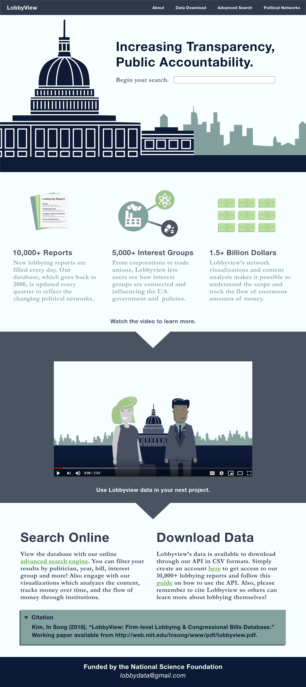
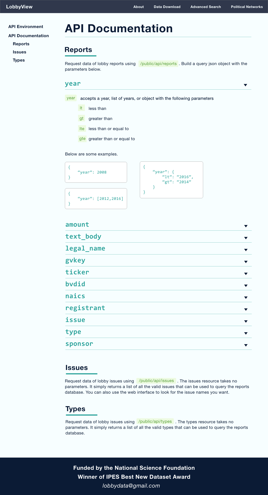
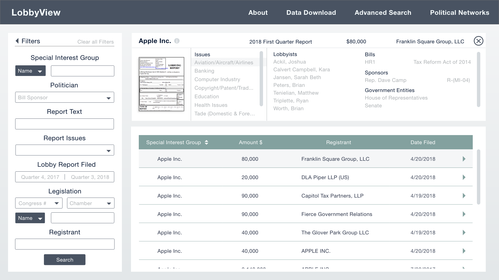

Hi! My name is Madeleine. I'm a software engineer, gardener, and
sourdough enthusiast! I love to ride my bike on trails or
busy urban streets, and I can knit a stitch or two.
Right now I'm working at a satellite internet company called Viasat
and training for a marathon! Wish me luck getting to 26.2 miles!
Tufts University
Medford, MA
B.S. in Computer Science and Political Science, Class of 2020
Favorite Courses: Data Structures, Machine Structure and
Assembly Language, Computer Security, Algorithms,
Programming Langugages, Discrete Math, Gender Work and
Politics in East Asia, Middle Eastern Politics, Gender
in World Politics, Ethics, and Epistemology.
I had originally enrolled in the introductory computer science
class on a whim simply to fulfill a math requiredment!
While I would have never imaged that two years later
I would now have several more math credits and a major
in computer science, I did see myself tackling
problems and creating real solutions. And I've done this
by not only designing and implementing programs, but by
also asking ethical questions and discussing policies.
This semester I am excited to be taking courses on programming
langugage design, internet-scale distributed systems, linear
algebra, political revolutions, and Soviet politics.
Viasat
Boston, MA
Viasat is a telecommunications company currently providing
residential and community based satellite internet to areas
where reliable high speed internet is not usually accessible.
Software Engineer, September 2020 - Present
Currently I am working on a REST API team that that is
improving video streaming quality and download speeds.
Software Engineer Intern, May 2019 - August 2019
I worked on their research team on internet acceleration using
machine learning methods to select the most important
features in predicting webpage loading times. This involved
building an entire pipeline to gather and clean data, engineer
about 300 features, and design and build an automated feature
selection tool.
MIT LobbyView
Cambridge, MA
UI/UX Programmer, September 2018 - September 2020
LobbyView is a comprehensive database that actively tracks and
organizes lobbying activities in Washington, DC. Led by MIT
Professor In Song Kim and funded by the National Science
Foundation, LobbyView increases transparency of money in politics.
As a UI/UX Programmer, I am designing and implementing the website
and daa visualizations using HTML, CSS, React, and Node.js. Below
are a selection of mock ups.



Illinois Campaign for Political Reform
Chicago, IL
Policy Research Analyst, May - August 2018
Illinois Campaign for Political Reform is a 501(c)3
non-partisan non-profit dedicated to promoting government
integrity, accountability, and transparency in Illinois by
addressing campaign finance, voter accessible, and election
reforms.
As a Policy Research Analyst, I
- Researched state and municipal policies regarding FOIA,
voting equipment, and public campaign financing
- Designed infographics to accompany weekly research articles
and other promo materials
- Collected and analyzed campaign finance data of federal,
state, and local candidates
- Designed ICPR’s theory of change and yearly progress
report
- Created a re-branding and marketing strategy and
conducted monthly social media analytic reports
- Coded web-scrapers to collect public but inaccessible
government information
District Office of the Honorable Mike Quigley
Chicago, IL
Intern, May 2017 - July 2017
The Honorable Mike Quigley serves Illinois’ 5th district in the
U.S. House of Representatives. His district office is where he and
his staff directly connect with his constituents by listening to
their concerns and helping them with federal agencies.
As a summer intern, I
- Provided first line of service by answering telephones
- Analyzed social media outreach and recorded all media
mentions and appearances
- Researched national policy on labor and trade, civil
liberties, and national security
Tufts CIVIC
Medford, MA
Logistics Director, May 2018 - May 2019
Communications Director, May 2017 - May 2018
General Member, Sep 2016 - May 2017
Tufts CIVIC is a discussion-based student organization that seeks
to provide a forum for political discourse on campus by
allowing students to freely express opinions from across the
political spectrum.
As an executive board member, I
- Designed a public marketing strategy encompasing email,
posters, flyers, and social media
- Organize events such as formal debates, civic action workshops, and
policy challenges